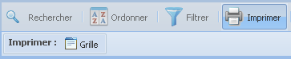

La barre d'outils des vues
Fonction « Imprimer » les vues

La fonction « Imprimer » les vues
permet d'imprimer la liste complète des vues des projets
du dictionnaire.
- Cliquez sur le bouton « Imprimer » de la barre d'outils, le
sous-menu d'impression s'affichera.
- La grille « Principale » montre par
défaut 50 vues des projets par page. L'option d'impression
« Grille » imprime
seulement les vues actives par page. Si le total des vues des
projets dépassent la valeur de 50, vous pouvez changer la
valeur d'affichage des vues par page dans le « menu de
navigation » :
- Dans le « menu de navigation »,
cliquez sur la flèche pour ouvrir la liste
déroulante des valeurs;
- Choisissez la valeur des vues par page que vous
désirez obtenir : 25, 50, 100, 500; les résultats
de la grille « Principale » s'actualiseront de
façon automatique;
- Sélectionnez l'option « Grille » pour imprimer la liste
active des vues.